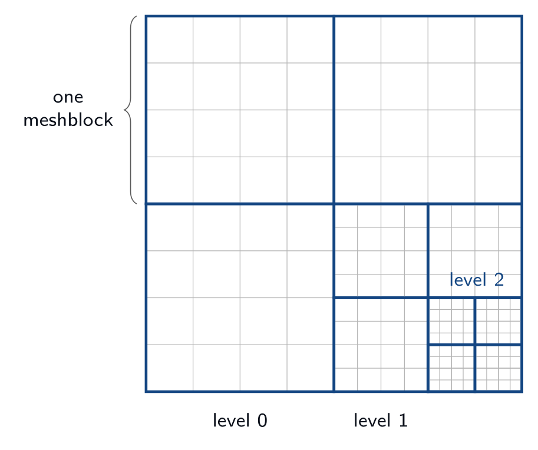

Developer’s guide
Performance portability concerns
riot is performance portable, meaning it is designed to
run not only on CPUs, but GPUs from a variety of manufacturers,
powered by a variety of device-side development tools such as Cuda,
OpenMP, and OpenACC. This implies several constraints on code
style. Here we briefly discuss a few things one should be aware of.
`portability decorators: Functions that should be run on device needs to be decorated with one of the following macros:
KOKKOS_FUNCTION,KOKKOS_INLINE_FUNCTION,KOKKOS_FORCEINLINE_FUNCTION. These macros are imported from the Kokkos library and resolve to the appropriate decorations for a given device-side backend such as Cuda so the code compiles correctly. Code that doesn’t need to run on device does not need these decorations.Relocatable device code: It is common in C++ to split code between a header file and an implementation file. Functionality that is to be called from within loops run on device should not be split in this way. Not all accelerator languages support this and the ones that do take a performance hit. Instead implement that functionality only in a header file and decorate it with
KOKKOS_INLINE_FUNCTIONorKOKKOS_FORCEINLINE_FUNCTION.Host and device pointers: Usually accelerators have different memory spaces than the CPU they are attached to. So you need to be aware that data needs to be copied to an accelerator device to be used. If it is not properly copied, the code will likely crash with a segfault. In general scalar data such as a single variable (e.g.,
int x) can be easily and automatically copied to device and you don’t need to worry about managing it. Arrays and pointers, however, are a different story. If you create an array or point to some memory on CPU, then you are pointing to a location in memory on your CPU. If you try to access it from your accelerator, your code will not behave properly. You need to manually copy data from host to device in this case.Real: The
Realdatatype is either a single precision or double precision floating point number, depending on howParthenonis configured. For most floating point numbers use theRealtype. However, be conscious that sometimes you will specifically need a single or double precision number, in which case you should specify the type as built into the language.
Parthenon
{kind=link}

Parthenon owns everything about where the solution lives: the mesh,
its decomposition into blocks, the distribution of those blocks across
MPI ranks, and the machinery that keeps neighboring blocks
consistent. RIOT supplies only the physics that runs on top. A RIOT
user rarely calls a Parthenon function directly, but every simulation
is configured through Parthenon’s <parthenon/*> input blocks, and
every field in the manual’s Registered Fields tables is a Parthenon
variable tagged with Parthenon metadata. This chapter collects the
concepts and inputs that most often matter. For more details, see the
Parthenon documentation
Mesh and MeshBlocks
The Mesh is the whole simulation domain. It is decomposed into
MeshBlocks: logically-rectangular bricks of cells, all of identical
logical size, that tile the domain (the figure below). All computation
happens block by block. The global cell counts are set in the
<parthenon/mesh> block (nx1, nx2, nx3) and the
per-block cell counts in the <parthenon/meshblock> block. The mesh
must be evenly divisible by the block size in every direction, and
each block must be at least four cells wide per active dimension. For
example, a \(256\times256\) mesh with \(64\times64\) blocks is
tiled into \(16\) MeshBlocks.
Each block is padded with ghost (halo) cells on every side —
nghost per side, default 2 — so that stencil operations near a
block edge can read valid neighbor data. Ghost cells are filled either
by a physical boundary condition at the domain edge or by
communication from the adjacent block; at a coarse–fine interface this
exchange also prolongates (coarse \(\to\) fine) and restricts
(fine \(\to\) coarse). Loop bounds are expressed through
Parthenon’s IndexRange abstraction, selecting the interior
(excluding ghosts) or entire (including ghosts) region of a block.
Block-Adaptive Refinement
Refinement in Parthenon is block based: to add resolution, a block
is split into \(2^{d}\) children (\(d\) = dimensionality),
each with the same cell count but half the cell size, one refinement
level finer. Refinement nests recursively, and Parthenon enforces
well-nesting so that neighboring blocks differ by at most one
level. Every block, at any level, is identified by a
LogicalLocation — its integer coordinate in the fully-refined grid
at its level — which Parthenon orders along a space-filling (Morton)
curve for load balancing.
The refinement strategy is chosen by refinement in the
<parthenon/mesh> block: none (default, uniform mesh),
static (fixed refined regions, declared in
<parthenon/static_refinement*> blocks), or adaptive (AMR
driven by runtime criteria in <parthenon/refinement*> blocks). The
maximum depth is set by numlevel.
Data Model: Containers and Packs
Parthenon exposes its field data in three layers, and RIOT kernels operate over the outermost one:
MeshBlockDataA container holding all variables (fields) on a single block for one integration stage. Field storage lives here as
ParArrays (thin wrappers overKokkos::Views).MeshDataA lightweight aggregator pointing at the
MeshBlockDataof many blocks (a partition, or “pack”) on the same stage.SparsePackThe on-device view spanning a partition’s blocks, indexable inside a kernel as
pack(b, var, k, j, i)(block \(b\), variable, cell \((k,j,i)\)), with fluxes viapack.flux(b, dir, var, k, j, i).
Blocks are grouped into packs so that one kernel launch processes many
blocks: launch overhead is fixed per kernel (of order microseconds on
a GPU), so packing amortizes it across all the blocks in the
partition. The partition size is controlled by pack_size (or,
equivalently, packs_per_rank). RIOT’s loop abstractions
(Chapter Loop Abstractions) are built on exactly this pack-of-blocks
structure.
Variables and Metadata
Every field is a Parthenon Variable tagged with a set of
Metadata flags that tell Parthenon how to allocate, communicate,
and refine it. These are the flags that appear (abbreviated) in every
Registered Fields table in this manual. The most important, grouped
by role, are given in the table below.
Flag |
Meaning |
|---|---|
Cell |
Cell-centered field (vs. |
Independent |
Part of the evolved state; written to restarts and prolongated/restricted on remesh. |
Derived |
Reconstructible from the independent state each step (the default). |
Conserved |
A conserved quantity (transported in flux-divergence form). |
Intensive |
An intensive quantity (not scaled by cell volume on refinement). |
WithFluxes |
Auto-creates an associated flux field for this variable. |
FillGhost |
Ghost zones are communicated between blocks each step. |
OneCopy |
Shared across integration stages; allocated once. |
Sparse |
May be allocated only on the blocks where it is needed (Section Sparsity). |
Restart |
Must be present in restart files. |
MPI Decomposition and Load Balancing
MeshBlocks are distributed across MPI ranks; each rank owns a subset
of the global block list. By default Parthenon balances by block
count (round-robin along the Morton ordering). A cost-weighted mode
is available by setting balancer = manual in the
<parthenon/loadbalancing> block and assigning per-block
costs. When adaptive refinement changes the block layout, Parthenon
automatically migrates blocks (and their Independent /
FillGhost fields) between ranks and rebalances.
Input Parameters
The parameters most RIOT users set are collected below. The authoritative defaults are those read in the Parthenon source; the table lists the ones a typical run touches.
Parameter |
Type |
Default |
Description |
|---|---|---|---|
nx1, nx2, nx3 |
int |
— |
Number of cells on the base mesh in each direction ( |
x1min …x3max |
Real |
— |
Physical extent of the domain in each direction. |
nghost |
int |
|
Ghost cells per side of every block. |
refinement |
string |
|
Refinement mode: |
numlevel |
int |
|
Maximum number of refinement levels. |
pack_size |
int |
|
MeshBlocks per pack (\(<1\) packs the whole rank into one). |
ix1_bc …ox3_bc |
string |
|
Boundary conditions per face: |
Parameter |
Type |
Default |
Description |
|---|---|---|---|
nx1, nx2, nx3 |
int |
mesh size |
Logical size of one MeshBlock per direction; must evenly divide the mesh, be \(\geq 4\), and (for SMR/AMR) be even. |
For adaptive runs, each <parthenon/refinement\(N\)>
block declares one tagging criterion: method (magnitude,
derivative_order_1, or derivative_order_2), the field to
test, and the thresholds refine_tol (default 0.5) and
derefine_tol (default 0.05), up to max_level.
Example
A \(256\times256\) two-dimensional mesh tiled into \(64\times64\) blocks, with two levels of adaptive refinement triggered on the density field:
riot.input("parthenon/mesh", nx1=256, x1min=0.0, x1max=1.0,
nx2=256, x2min=0.0, x2max=1.0,
nx3=1,
refinement="adaptive", numlevel=2)
riot.input("parthenon/meshblock", nx1=64, nx2=64, nx3=1)
riot.input("parthenon/refinement0", method="derivative_order_1",
field="ccbulk::rho",
refine_tol=0.5, derefine_tol=0.05)
singularity-eos
singularity-eos is the equation-of-state library that supplies
RIOT’s material thermodynamics (Chapter Materials and Equations of State). It
provides both the single-material EOS evaluations and the
pressure–temperature-equilibrium (PTE) solver that closes mixed
cells. This chapter describes the two facets of its API that a RIOT
developer meets: the EOS object and its accessor calls, and the PTE
closure. For more details see the Singularity-EOS documentation
The EOS Object
singularity-eos uses value semantics, not runtime
polymorphism. An EOS is a singularity::Variant — a tagged union
over the concrete EOS types (IdealGas, Gruneisen, the tabular
Spiner models, IdealElectrons, …). RIOT assembles its own
variant, RiotEOS::EOS (in microphysics/eos_riot.hpp), from
this type list plus the ionization “\(Z\)-split” modifiers, and
stores one EOS object per material in a ParArray1D<RiotEOS::EOS>.
Because the variant is a plain value with no virtual table, it is
host/device portable: every accessor is marked
PORTABLE_INLINE_FUNCTION and is callable inside a Kokkos
kernel. An EOS built on the host is relocated to the device with
GetOnDevice() (which moves any table memory into device memory)
and then captured by value into a KOKKOS_LAMBDA. To avoid paying
the variant dispatch on every call, RIOT uses
EvaluateDevice(functor), which resolves the concrete type once and
hands it to a functor that then makes many scalar calls.
Accessor Calls
Every thermodynamic quantity is exposed through two entry points — one
taking \((\rho,T)\) and one taking \((\rho,e)\) — reflecting
the two natural independent-variable pairs. The most common calls are
listed in the table below. Each also accepts an optional trailing
lambda argument: a per-call scratch/state indexer used mainly by
tabular EOS to cache the last \((\log\rho,\log T)\) bracket (and,
in RIOT, to inject the ionization state \(\bar Z\)). RIOT probes
eos.NeedsLambda<...>() at initialization to decide whether those
cache fields must be allocated at all.
Accessor |
Returns |
|---|---|
PressureFrom… |
Pressure \(p\). |
InternalEnergyFromDensityTemperature |
Specific internal energy \(e\) from \((\rho,T)\). |
TemperatureFromDensityInternalEnergy |
Temperature \(T\) from \((\rho,e)\). |
SpecificHeatFrom… |
Specific heat \(c_v\). |
BulkModulusFrom… |
Bulk modulus \(B\). |
GruneisenParamFrom… |
Grüneisen parameter \(\Gamma\). |
DensityEnergyFromPressureTemperature |
Inverse: \((\rho,e)\) from \((p,T)\) (by reference). |
FillEos |
Fills a requested subset of \(\{p,e,c_v,B,\dots\}\) in one call. |
The two “off-axis” conversions — \((\rho,e)\to T\) via
TemperatureFromDensityInternalEnergy and \((\rho,T)\to e\) via
InternalEnergyFromDensityTemperature — are the workhorses that let
a package move between the state it holds and the state an EOS
prefers. PreferredInput() reports which pair a given EOS evaluates
most cheaply.
Pressure–Temperature Equilibrium
A cell containing more than one material is closed by requiring all
materials to share a common pressure and temperature at fixed total
volume and energy — the PTE conditions of
Chapter Hydrodynamics. singularity-eos provides this in
closure/mixed_cell_models.hpp as a family of Newton solvers, each
templated on caller-supplied per-material indexers so it can operate
directly on RIOT’s Parthenon data layout. The solvers differ in which
variables are held fixed (the table below).
Solver |
Independent variables / use |
|---|---|
PTESolverRhoT |
Temperature and volume fractions; enforces energy sum and pressure equality. RIOT’s primary solver. |
PTESolverFixedT |
Temperature held fixed; RIOT’s backup solver. |
PTESolverFixedP |
Pressure held fixed. |
PTESolverPT |
Solves in \((p,T)\) space; two equations regardless of material count. |
PTESolverRhoU |
Per-material density and energy (\(2N\) equations). |
The free function singularity::PTESolver(system) drives the
iteration: initialize, then repeatedly check convergence, build the
Jacobian, solve the dense linear system, bound and line-search the
step, and renormalize volume fractions. Results are written in place
into the per-material indexers (equilibrated \(\rho_m\),
\(f_m\), \(e_m\), \(T_m\), \(p_m\)); the returned
SolverStatus carries only convergence and iteration
metadata. Solver behavior is tuned through a MixParams struct,
which RIOT populates from the PTE input parameters of
Chapter Materials and Equations of State.
RIOT drives all of this from Closure::ApplyMixedCellClosure
(microphysics/pte_closure.cpp). For each cell it gathers the
materials whose mass fraction exceeds a threshold, and, when more than
one participates, calls PTESolverRhoT; on failure it falls back to
PTESolverFixedT and, if necessary, progressively drops the
lightest material until a single-material closure remains. Mixed cells
of ideal gases take a separate analytic path
(ApplyIdealGasClosure) that partitions volume fractions in closed
form without a Newton solve.
singularity-opac
singularity-opac is the opacity library that supplies the
absorption and scattering coefficients used by RIOT’s radiation
packages. It is a sibling of singularity-eos and shares its
design: concrete opacity models are wrapped in a value-semantic
variant, every accessor is host/device portable, and a device-resident
copy is obtained with GetOnDevice(). RIOT uses the library’s
photon opacities (in singularity-opac/photons/), and
specifically its multigroup (frequency-binned) tabulated means.
Opacity Objects Are Per-Material
Opacities in RIOT are a material property, exactly as the EOS is,
and they are multigroup throughout: the object RIOT stores for each
material is a tabulated group-mean opacity, and a gray run is simply
the single-group special case. The photon family splits
absorption/emission from scattering; RIOT enrolls the tabulated mean
variants in microphysics/opacity_models.hpp:
RiotOpacity::MeanOpacA(an alias for singularity-opac’sMeanOpacity, absorption), andRiotOpacity::MeanOpacS(MeanSOpacity, scattering).
For each material the <material\(N\)/opac> block
selects an underlying absorption and scattering model through
opac_a and opac_s (none, constant, powerlaw, or
table). At initialization materials.cpp builds the group-mean
table for that material — either by integrating the chosen
monochromatic model (Gray/PowerLaw for absorption,
GrayS/ThomsonS for scattering) over each frequency group, or
by reading a pre-tabulated SP5 (HDF5) file — moves it to the device
with GetOnDevice(), and stores it in a per-material device array
ParArray1D<RiotOpacity::MeanOpacA> (and the matching MeanOpacS
array), both of length num_opac. All materials share one global
group structure (\(N_g\) groups and their frequency bounds), which
materials.cpp checks for consistency across the table-based
materials.
A radiation kernel loops over the materials in a cell and, for
material \(m\), fetches opac_a(opac_id) — where opac_id =
opac_from_matid(mat_id) + phase_id — and evaluates it with that
material’s own state \((\rho_m,\,T_m)\). The coefficient returned
is therefore the opacity of a single material, not a cell-averaged
bulk value; the radiation package is what combines the per-material
coefficients (Chapter Radiation Transport).
Opacity Calls
The two accessors RIOT calls are the group-mean absorption and scattering coefficients, both with units of inverse length. Because the opacity is multigroup, the third argument is an integer group index \(g\in[0,N_g)\) — not a frequency — and each call returns the mean coefficient for that group at the material’s density and temperature:
An optional fourth argument, gmode, selects the averaging weight
from the OpacityAveraging enum {Rosseland, Planck}
(default Rosseland); named wrappers
(RosselandGroupAbsorptionCoefficient,
PlanckGroupAbsorptionCoefficient) fix it explicitly. The mean
tables were produced from the underlying monochromatic model at build
time (a Gray model gives a coefficient \(\rho_m\kappa\)
independent of frequency; PowerLaw scales with \(\rho_m\),
\(T_m\), and \(\nu\)), so no continuous frequency appears in
the call — the group index carries all of the spectral dependence.
The group structure is queried through the same objects: ngroups()
returns \(N_g\), GetGroupBounds() returns the \(N_g+1\)
group edges, and GroupOfNu(nu) maps a frequency to its group
index. A typical absorption-coefficient loop — accumulating a
volume-fraction-weighted cell coefficient for each group — looks like:
for (int g = 0; g < ngroups; ++g) { // frequency group
Real aa = 0.0;
for (int m = 0; m < nmat; ++m) { // materials in the cell
const int opac_id = opac_from_matid(mat_id) + phase_id;
const Real aam = (rho_m > 0.0)
? opac_a(opac_id).AbsorptionCoefficient(rho_m, temp, g) // group index g
: 0.0;
aa += vfrac_m * aam; // combine over materials
}
}
RIOT’s radiation solver (Chapter Radiation Transport) is written to be multigroup: it loops over the runtime group count \(N_g\) and evaluates each material’s opacity at the current group index, exactly as above. A gray run is just the \(N_g=1\) configuration of that same code path — only \(N_g\) and the group bounds change — so no separate gray API is needed.
Note
Units caveat: RIOT configures singularity-opac in CGS throughout and restricts itself to the coefficient calls above to avoid any unit-system mismatch with the diffusion module. Where RIOT needs a temperature derivative of the opacity it computes it itself.
Loop Abstractions
Most performance-critical RIOT physics kernels are written once, in
terms of two abstractions — RiotLoop::outer and
RiotLoop::inner — and the same source compiles into efficient
code on both CPUs and GPUs. This chapter explains what those
abstractions are, the RiotUtils::LoopType entry point through
which a kernel actually spins one up, how the LoopConstraint hints
and loop-order tags steer them, their reduction counterparts, and,
most importantly, what they all become on each machine. (RiotLoop
is an alias for Parthenon’s loop_abstraction namespace; the two
names are interchangeable.)
Not every loop uses this machinery. Problem generators
(Chapter Regions) and a handful of boundary sweeps are
written directly with Parthenon’s par_for (and par_for_outer/
par_for_inner), because they either run once at setup — where
performance portability of a hand-written index space buys little — or
have an iteration shape (e.g. a runtime-selected block-face plane)
that the interior-sweep contract of RiotLoop::inner does not
express. Those cases are the exception; the abstractions below are the
rule for the physics update.
Two Entry Points, Two Backends
RiotLoop::outer launches a parallel loop over a partition of
MeshBlocks; its lambda receives an index range and a block
index. RiotLoop::inner runs inside that lambda, iterating the
cells \((k,j,i)\) of the current block. A kernel is therefore an
outer over blocks containing one or more inner loops over
cells, with TeamBarrier() calls separating any producer inner
loop from a consumer that reads its results.
The key design point is that the backend is chosen at compile
time. Each index space carries a static backend_v constant:
enum class loop_backend { raw, kokkos };
// host == device build -> plain C++ loops ("raw"); GPU build -> Kokkos launch
constexpr loop_backend default_loop_backend_v =
std::is_same_v<DevExecSpace, HostExecSpace> ? loop_backend::raw
: loop_backend::kokkos;
Both outer and inner are one-line if constexpr dispatchers
on this constant, so one path is compiled away entirely. Together with
the loop-order tag (Section Loop Abstractions, below), this determines
the concrete form: the same kernel body becomes nested for loops
on a CPU build and a Kokkos parallel_for launch on a GPU build.
The Entry Idiom: LoopType and GetIndexSpace
A kernel does not hand RiotLoop::outer a raw index space; it
builds one through RiotUtils::LoopType, the alias that bundles the
loop-order tag, inner-access tag, and any LoopConstraint hints
into a single type. The type exposes a GetIndexSpace factory and
the matching outer-body parameter type idx_range_t, so the same
alias names both the space and the lambda signature. The canonical
opening of a RIOT kernel is:
using lt = RiotUtils::LoopType<>; // default constraints
auto idx_space = lt::GetIndexSpace(IndexDomain::interior, /*halo=*/0,
v.GetNBlocks(), md, TE::CC);
RiotLoop::outer(idx_space,
KOKKOS_LAMBDA(const lt::idx_range_t &idx_range, const int b) {
auto pv = RiotLoop::make_pack_view(idx_range, v);
RiotLoop::inner(idx_range, [&](auto kji) { /* ... per-cell work ... */ });
});
GetIndexSpace takes the Parthenon index domain
(interior/entire), a halo inset/extension (0 for a plain
interior sweep; positive to widen the producer range as in
Section Two Kernels in Practice), the block count of the pack, the
MeshData (or MeshBlockData), and the topological element
(CC for cell-centered). Constraints are supplied as template
arguments to the alias —
e.g. RiotUtils::LoopType<LoopConstraint::NoGhost> — which is where
the hints of the next section are actually applied.
LoopConstraint and the Inner-Access Tag
RiotLoop::LoopConstraint values are compile-time hints, passed as
template arguments to the index space, that let RIOT pick the most
efficient way to hand cell indices to the inner lambda:
- Default
The inner body receives an opaque memory index — the flat offset into the field’s storage. This inlines to
var[idx]and vectorizes cleanly; it is the fast path.LoopConstraint::NoGhostGuarantees the loop touches no ghost zones, so a logical-flat index (dense over the interior) can be used.
LoopConstraint::DifferentMemSpacesSignals that fields of different centering (for example, face- and cell-centered) appear in the same kernel and cannot share one flat index; the body then receives logical coordinates \((k,j,i)\).
LoopConstraint::SingleBlockDeclares that the loop covers exactly one block. Unlike the two above, this does not change the index form; it changes the loop order (Section Loop Abstractions below), forcing the point-wise
boivtag on both backends so the block’s cells parallelize across threads rather than launching a single idle team.
In all cases the body may instead be written to take explicit (int
k, int j, int i) arguments; the abstraction supplies whichever form
the body declares, and idx_range.GetKJI(kji) recovers coordinates
from an opaque index when only a few are needed (e.g. to store a
flux).
What the Loops Become: CPU versus GPU
The two backends must cover exactly the same logical cells; they differ only in how blocks and cells map to hardware. The transforms for the two tags RIOT actually selects — boiv on GPU and bvoi on CPU — are sketched below in pseudocode.
GPU build (kokkos \(\to\) boiv).
outer becomes a flat Kokkos RangePolicy over the product of blocks and cells; each work item is a single cell, and one GPU thread owns it. inner executes that cell’s body. No Kokkos team is formed, so TeamBarrier() is a no-op and any registered per-point scratch is private to the thread’s cell:
// RiotLoop::outer -> flat RangePolicy over (block x cell); one cell per thread
total = nblocks * cells_per_block;
parallel_for(RangePolicy(0, total),
[=] (int64 flat) {
b = flat / cells_per_block; // work item -> block
local = flat % cells_per_block; // work item -> cell in block
(k,j,i) = logical_indexer(local);
idx_range = InnerIndexRange(..., b, k, j, i);
// RiotLoop::inner -> this thread's single cell
body( idx_range );
/* TeamBarrier() is a no-op: no team, one cell per thread */
});
CPU build (raw \(\to\) bvoi).
outer becomes a plain for loop over blocks only; inner becomes the nested \(k,j\) loops with a single vectorizable #pragma omp simd sweep over \(i\) across the whole block. TeamBarrier() is a no-op because one host thread walks the block in order:
// RiotLoop::outer -> ordinary loop over blocks
for (int b = 0; b < nblocks; ++b) {
idx_range = InnerIndexRange(..., b);
// RiotLoop::inner -> nested k,j loops with a vectorized simd sweep over i
for (int k = ks; k <= ke; ++k)
for (int j = js; j <= je; ++j)
#pragma omp simd
for (int i = is; i <= ie; ++i) body( k, j, i );
/* TeamBarrier() is a no-op here */
}
The mapping is summarized in the table below.
Construct |
GPU ( |
CPU ( |
|---|---|---|
RiotLoop::outer |
flat |
plain |
parallel unit |
one GPU thread per cell |
single host thread per block |
RiotLoop::inner |
the thread’s single cell |
nested \(k,j\) loops with |
registered scratch |
per-thread (one cell) |
ordinary stack/heap buffer |
TeamBarrier() |
no-op (no team) |
no-op |
Two Kernels in Practice
A flat map: FillInteriorDerived.
The simplest use is a block \(\to\) cell map with no scratch, halo, or barriers — here reconstructing the bulk density from per-material cell-volume-averaged densities and then the bulk velocities and internal energy:
RiotLoop::outer(idx_space, KOKKOS_LAMBDA(const auto &idx_range, const int b) {
auto pv = RiotLoop::make_pack_view(idx_range, v);
const int nmat = v.GetSize(b, ccmat::rho());
RiotLoop::inner(idx_range, [&](auto kji) { pv(ccbulk::rho(), kji) = 0.0; });
for (int m = 0; m < nmat; ++m) { // the "v" (material) level
auto sp = RiotLoop::make_sparse_pack_view(idx_range, v, m);
RiotLoop::inner(idx_range, [&](auto kji) {
pv(ccbulk::rho(), kji) += std::max(sp(ccmat::rho(), kji), 0.0);
});
}
RiotLoop::inner(idx_range, [&](auto kji) {
const Real irho = 1.0 / (pv(ccbulk::rho(), kji) + 1.e-100);
pv(ccbulk::velocity(0), kji) = pv(ccbulk::momentum(0), kji) * irho;
/* ... internal energy from total energy ... */
});
});
A producer/consumer pipeline: CalculateFluxes.
The hydro flux kernel uses the full machinery: typed per-point scratch, a halo-widened producer range (so the flux loop can read reconstructed states at \(kji-\delta\)), an intermediate material loop, and TeamBarrier() between stages:
RiotLoop::outer(idx_space, KOKKOS_LAMBDA(const auto &idx_range, const int b) {
auto halo_range = idx_range.AddHalo<halo>(); // widen by one cell in sweep dir
auto bulk_minus = GetTypeIndexedPerPointScratch<Real, bulk_recon_types>(halo_range);
auto bulk_plus = GetTypeIndexedPerPointScratch<Real, bulk_recon_types>(halo_range);
ReconCells(RiotLoop::make_pack_view(idx_range, v), halo_range, ...);
for (int m = 0; m < nmat; ++m) { // reconstruct each material
RiotLoop::inner(halo_range, [&](auto kji) { /* ... limit vfrac ... */ });
halo_range.TeamBarrier(); // sync producers -> consumers
}
RiotLoop::inner(idx_range, [&](const auto kji) { // HLLC Riemann solve on faces
const auto kji_L = kji - delta, kji_R = kji;
const auto [k, j, i] = idx_range.GetKJI(kji);
v.flux(b, DIR, ccbulk::momentum(0), k, j, i) = /* ... */;
});
});
Both kernels are written against the identical outer/inner API; the abstraction lowers each to the flat one-cell-per-thread launch on a GPU or the nested-simd form on a CPU, with no change to the physics source.
Reductions
Kernels that must combine a value across all cells — a time-step minimum, a total mass or energy, a refinement flag — use the reduction counterparts RiotLoop::outer_reduce and RiotLoop::inner_reduce. These mirror outer/ inner exactly, but the index space is built through RiotUtils::ReductionType instead of LoopType. It takes the Kokkos reducer as its first template argument (followed by any LoopConstraint hints), exposes the same GetIndexSpace factory and idx_range_t, and additionally names the reduced type value_t. outer_reduce returns the reduced value; the inner_reduce body takes a trailing accumulator reference to update. A time-step estimate reads:
using rt = RiotUtils::ReductionType<Kokkos::Min<Real>>;
auto idx_space = rt::GetIndexSpace(IndexDomain::interior, /*halo=*/0,
v.GetNBlocks(), md, TE::CC);
const Real min_dt = RiotLoop::outer_reduce(idx_space,
KOKKOS_LAMBDA(const rt::idx_range_t &idx_range, const int b) {
auto pv = RiotLoop::make_pack_view(idx_range, v);
auto &coords = v.GetCoordinates(b);
RiotLoop::inner_reduce(idx_range, [&](const auto idx, Real &ldt) {
const auto [k, j, i] = idx_range.GetKJI(idx);
ldt = std::min(ldt, /* ... local CFL time from pv/coords ... */);
});
});
The reducer choice is arbitrary: Kokkos::Min<Real> for a time step, Kokkos::Sum<Real> for a conserved-quantity total, Kokkos::Max<int> for a refinement flag. ReductionType is kept separate from LoopType deliberately, so a reduction may select a different loop-order tag than the plain map path if that proves faster; a caller never sees the difference beyond the alias name. As with the map API, the choice of reducer and constraints is the only thing that changes between backends — the body is written once.